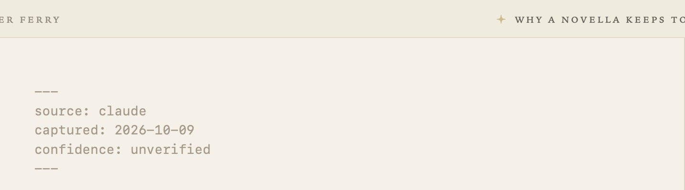
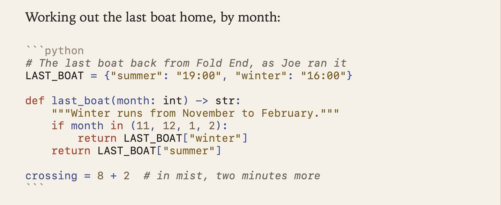
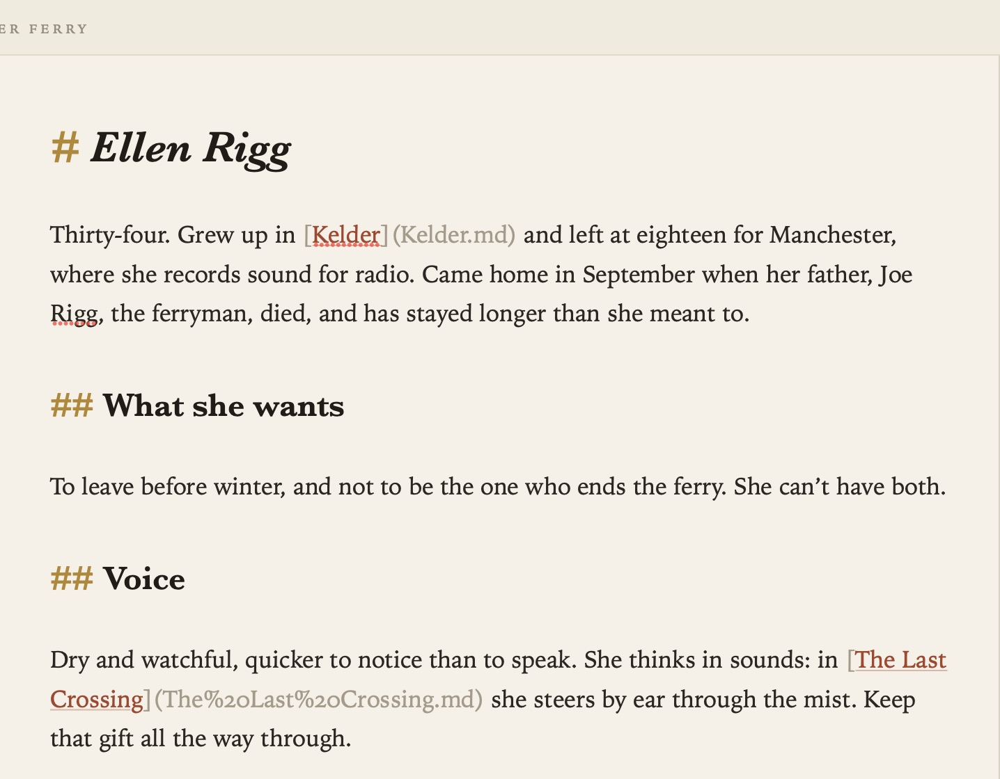
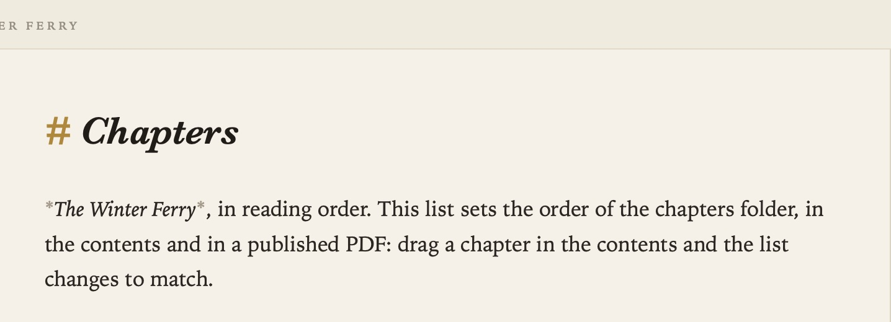
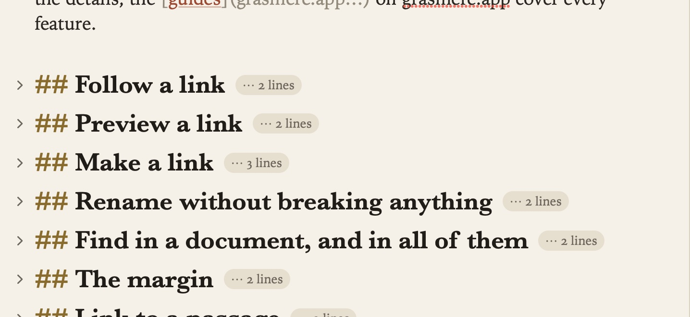
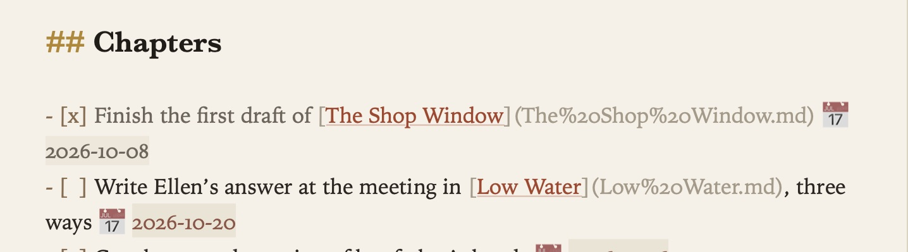
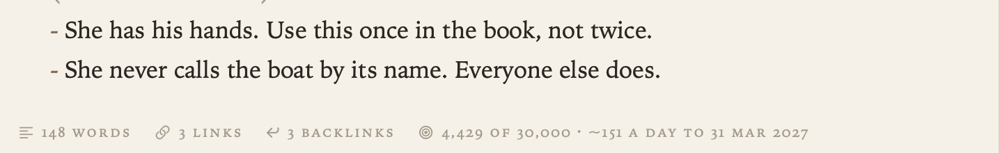
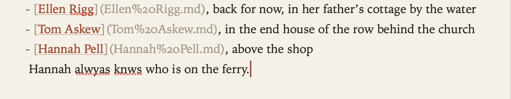

Writing and Formatting
You write in plain Markdown, and what you type is what’s saved. As you write, the page styles headings, emphasis, lists and links. The markup stays visible but faint, so you can always see it and change it.
Plain files
Every document is a .md file in the folder you opened. Its first heading is its title, and that’s the name the contents show. There’s no database and no special syntax. You can open the same files in another editor, read them on GitHub, keep them in git or hand them to an AI tool.

Front matter is the block between --- lines at the very top of a document. Grasmere keeps it as it is and shows it faintly. You can also edit its fields in the margin’s Front Matter section. See The Margin. A few fields mean something to Grasmere: synopsis, a line about a chapter, and status (new in 1.4), one of Unwritten, Draft, Revised or Final, which the Review stage’s cards set for you. See The Manuscript View. draft: true or publish: false keeps a document out of the website. See Publishing.
New in 1.3. A code block, the lines between ``` fences, is set in a monospaced type with the fences faint. Name the language after the opening fence, such as ```swift, ```python, ```json or ```sh, and the keywords, strings, comments, numbers and types take quiet colours from the theme. They’re coloured the same way in the PDFs and websites you make. The text stays exactly as you typed it. A block with no language is left in the plain code colour.

Formatting
| To | Do this |
|---|---|
| Make text bold | Format ▸ Bold (⌘B), or type **bold** |
| Make text italic | Format ▸ Italic (⌘I), or type *italic* |
Mark code | Format ▸ Code, or type backticks |
| Add a heading | Format ▸ Heading 1, 2 or 3 (⌥⌘1, ⌥⌘2, ⌥⌘3), or start the line with #, ## or ### |
| Quote | Format ▸ Blockquote (⌥⌘Q), or start the line with >. Return continues the quote (twice to end it), and several lines pasted into a quote are all quoted |
| Add a rule | Type --- on a line of its own |

When you type a bracket, quote or backtick, its closing partner appears too.
Lists
Lists carry on by themselves.

- Return on a list line starts the next item.
- Tab nests an item, and ⇧Tab brings it back out.
- Return on an empty item ends the list.
- Numbered lists renumber themselves as you add and remove items.
A list item that starts with [ ] is a task. See Tasks and Due Dates.
Footnotes
New in 1.4.
Put a mark in the text, [^1], and the note itself on a line of its own, usually at the end of the document:
The ferry ran twice a day until 1954.[^1]
[^1]: Lakeland Ferries, *Timetables 1920–1960*, p. 14.
The label can be anything, [^ferry] as well as [^1]; the notes are numbered in the order they’re first mentioned, and a note referred to twice keeps one number. A note can run on: lines straight after it carry on, and a paragraph indented after a blank line belongs to it too. A citation inside a note is written in the project’s style like any other.
On the page, the mark is small and raised, as it will be printed, with its label in the link colour. The note’s text stays faint until the cursor is in it, so the notes sit back from the writing. Labels aren’t spell-checked.
Where the notes go depends on what you make:
- In a PDF, at the foot of the page the mark is on, under a short rule, numbered from 1 in each chapter of a book.
- In a Word document, real Word footnotes, which start again at 1 in each chapter of a book.
- On a website, in Quick Look and in the Manuscript (the Publish stage’s page), as numbered notes under the page or chapter, each number linking down to its note and the note linking back up.
See Publishing.
Folding headings
In a long document, fold sections away under their headings to get a short outline. Point at a heading and click the chevron in the left margin, or use the menu:

- View ▸ Fold Section (⌥⌘[) and Unfold Section (⌥⌘])
- View ▸ Fold All (⇧⌥⌘[) and Unfold All (⇧⌥⌘])
Folding only hides text on screen. The file never changes. Grasmere remembers your folds when you quit and reopen.
Dates
Write a date as 2026-10-03 anywhere and it shows as a quiet chip. Click it to pick another day from a calendar. Only the date changes. Dates in code or in a link’s address are left alone.

Word count
The bar beneath the page shows the document’s words, links and backlinks. Select some text and it counts the words you’ve selected. To turn the bar on or off, choose View ▸ Show Word Count, or use Settings ▸ Appearance ▸ Show word count beneath the page.

Spelling
Settings ▸ General ▸ Check spelling while typing turns the underline on or off. With the language set to Automatic, Grasmere works out which language each paragraph is in as you write. Link addresses, code and front matter are never checked.

Undo
⌘Z undoes your typing, and the history survives saving. You can also undo things Grasmere does for you, such as rewriting links after a rename. See Links and Backlinks.
Related
- Pictures and Tables
- Focus Mode and Split View
- Themes and Settings, for type, text size and width